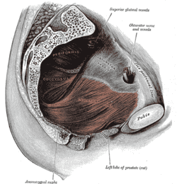
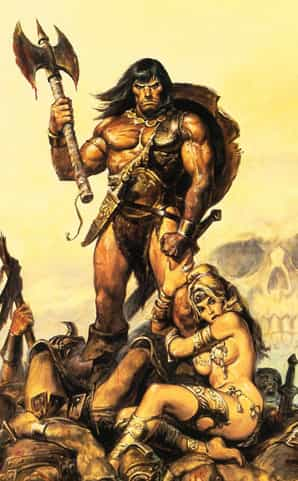

< < < Back
How To Improve Your Sex Life With Kegel Exercises – Return Of Kings
If there is anything that I have learned from my forays into physical culture and life in general, it’s that any weakness, be it mental or physical, can be trained and overcome, and with eventual success is likely to come repeated success. This even extends to your sex life.
Some Background Information
“How the hell can I train to improve my sex life, Larsen?” you might be asking yourself in disbelief. There are, in fact, many ways of doing it—ranging from developing your skills in foreplay to learning new positions. You might even give the fingertip push-ups a try to develop hand strength and endurance for…various reasons.
But rather than those, this article discusses a specific method of muscular training that will specifically aid your sex life, which I already know is a goal of yours. Because it’s a goal of any man who’s honest with himself, even if he ostensibly has no sexual issues-because who doesn’t want better sex? Nobody, that’s who.
The muscles that will be trained are the pubococyggeus muscles, a sling of muscles that runs from the groin, across the perineum, and up towards the anus.

Through a special group of exercises, known as pelvic floor exercises or Kegel exercises (After Dr. Arnold Kegel, their discoverer), both men and women can become capable of consciously flexing their pelvic floor muscles, and this provides a variety of physiological and sexual benefits.
The Benefits
For men, the main benefit (at least in my experience) is increasing sexual stamina and potency. Some men claim that they can flex themselves into a full erection, and report more intense orgasms, but unlike the increased stamina, I have never experienced these.
For those men who don’t last very long in the sack, kegels just might be the ticket to improved sexual performance for you, and increased sexual satisfaction for her. To be blunt (to the point of being profane), the simplest way to make a woman orgasm is to give her a hard and fast rogering until you receive some sign of completion (if you need me to explain what these signs are, peruse the site some more and practice the techniques it describes). However, most men don’t have the physical capacity to last this long, which is why, if the woman is to climax at all, other methods are typically used. Kegels have given me that capacity (though I admit there is always room for improvement), and judging from their reactions, I think I’m doing an alright job.
I realize that some other articles on this website state that men shouldn’t concern themselves with sexual stamina, and I also realize that in saying this I may lose my “cred” with the keyboard alpha males in the crowd, but I actually do concern myself with making the women I sleep with orgasm for two very important reasons.
One is the raw sense of satisfaction I get—emotionally, it feels pretty damn good to have a woman screaming your name, invoking the name of God to praise your sexual prowess, and telling you how you make all of her exes look like complete chodes in comparison (yeah, I need to hear people tell me how good I am on occasion. Sue me). The second is… shall we say, economical: when you’ve given her a screaming orgasm once, she’s going to come crawling back for more, and not going out prowling for girls saves you time and effort which you can instead use to do literally anything you want.

“Crawling back for more”, taken literally
As mentioned before, women are also capable of doing these exercises. Unlike men, they regularly report having easier, more frequent, and more intense orgasms from this training. In addition, these exercises also provide them with greater muscular control over their nether regions. And, speaking from experience, that muscular control can be used to tremendous effect.
How To Train
So, having prattled on for about 400 words on why you should do these exercises, I suppose I should now explain how they’re done.
The first step is to “find” the Pubococcygeus Muscle. Many people who first try to do these exercises—such as myself in high school—will end up flexing their sphincter, their abdomen, or other muscles in the area. Obviously, this does nothing to benefit the PC muscle, and will not help you sexually.
The PC muscles are those used when the flow of urine is suddenly halted. The next time you take a leak, suddenly halt the flow, feel the sensation and note where you feel it. The most common mistake made is people flexing their stomach muscles and not the pelvic floor muscles—to fix this, place a hand on your stomach as you flex the PC muscles. If you feel your abdomen flexing, you’re doing it wrong.
A Basic Routine
My routine is as follows:
1. Hold it for as long as you can with proper “form”—just flex and hold. Start with five or 10 seconds, and build up gradually to a minute and more.
2. Clench, hold for a period of time, release, and repeat. Start with five second “reps” and maybe three sets. Increase the held time and “sets” as you get stronger
3. Rapid clench-and-release. Start with a set of 10, and gradually increase.
This routine can literally be done anywhere-driving in the car, while sitting on the computer, anywhere that you’re alone. For obvious reasons, I’d avoid doing this in public, though people will usually not be able to tell. Wherever the place, increased sexual potency is at your fingertips.
Read More: 3 Ab Exercises Every Man Must Know